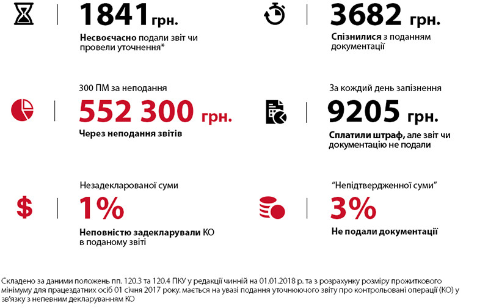

If you are having an urgent need to prepare transfer pricing documentation, you have to be ready for a time-consuming process. The amount and complexity of work associated with it can easily turn this task into a real pain in the neck.
However, first you have to figure out whether you actually fall within the scope of the Article 39 or Paragraph 140.5.4 of the of the Tax Code of Ukraine and whether transfer pricing is something you have to deal with in the first place.
The very definition of controlled transactions has its hidden pitfalls, which is why it is hard to tackle this matter right away, especially against the backdrop of the ever-changing terms of the tax legislation.
In particular, in 2017-2018, changes were made both to the threshold amount of transactions involving counterparty and the requirements as to the taxpayer’s minimum net profit. Aside from that, some of the criteria for recognizing transactions as controlled were extended.
Let's start off with the latter and try figure out when transactions are not deemed con- trolled.
It stands to mention that the sharp eye of the State Fiscal Service has zero interest in "small" transactions: for the transaction to be deemed controlled, the sum of transactions involving one counterparty (by direct agreements or through intermediaries that perform no major functions within the framework of the agreement) shall start from UAH 10 million in 2017-2018 (or UAH 5 million in 2015-2016).
An additional criterion for recognizing transactions as controlled is the total amount of taxpayer's income resulting from all types of activities. In 2015-2016, the threshold amount was UAH 50 million and has been increased to UAH
Companies having smaller revenues cannot have controlled transactions.
The counterparty is another crucial aspect when it comes to controlled transaction. Below is a list of criteria, according to which the transaction is recognized as controlled in 2018, obviously in case of the relevant sum of transactions and total amount of taxpayer’s income.
Transfer pricing: the price of the violation

So, let’s sum up.
Your transaction is not deemed controlled, if at least one of the following criteria is met:
- The total amount of taxpayer's income for the year does not exceed UAH 150 million;
- Volume of transaction involving a non-resident does not exceed UAH 10 million;
- The counterparty does not meet any of the options given in the table above.
However, even if your transaction is not controlled, it does not mean that you will avoid having to prepare transfer pricing documentation altogether.
Pursuant to Paragraph 140.5.4 of the Tax Code of Ukraine, you are required to submit documentation regarding transactions which are not recognized as controlled, should they involve counterparties:
- based in the countries with low profit tax (from the relevant list approved by the Cabinet of Ministers of Ukraine);
- that have legal form of organization which implies payment of profit tax in a country where the counterparty is a resident;
- the counterparty is a non-profit organization or state-financed organization and is going to provide goods / services worth UAH 93,075 UAH and more in the course of 2018.
In all such instances, adjusting controlled transaction’s price by the taxpayer and increasing the income up to a figure of 30% of the invoiced value of the transaction can serve as an alternative to documentation preparation. Traditionally, the revenues should be increased only with respect to very small transactions (those amounting up to UAH 150-200 thousand). Should transactions involving the counterparty exceed this amount, it would be cheaper to place an order for preparation of transfer pricing documentation.